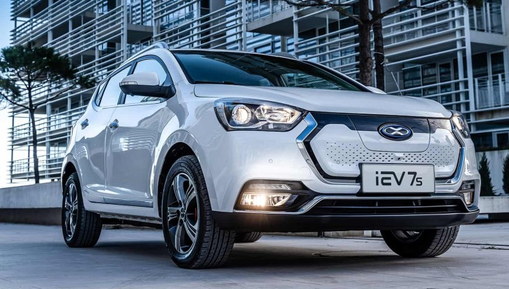

-
BMW i3 satın almak isteyenler, Borusan Otomotiv’in özel paketlerinden yararlanabilirler. Günlük kullanım koşullarında 260 km seviyesinde menzil sunan BMW i3, 325 km’ye kadar menzile ulaşabilmenize olanak sağlıyor. 0-100 km/s hızlanması 6.9 saniye olan BMW i3’ün sistem gücü ise 184 HP. Hızlı şarj istasyonlarında bataryanın yüzde 80’ine kadar dolması 42 dakikada gerçekleşebiliyor.
-
BMW’nin SAV ailesindeki merkez model olan BMW X3 artık tamamen elektrikli bir versiyona da sahip. BMW iX3 adındaki bu model, mevcut BMW X3’ün ana tasarımını korurken “BMW i” ailesinin detaylarıyla kendini belli ediyor. Otomobilin pek çok noktasındaki mavi renkli detaylar haricinde 19 inçlik jantlar da elektrikli mobiliteyi vurguluyor. Normalde yakıt deposuna ulaşılan kapak, BMW iX3’te elektriğin depolanmasını sağlıyor. Tam şarjlı haldeyken 460 km’ye kadar menzil sağlayabilen BMW iX3, 150 kw’a kadar yüksek güçlü şarj edilebilme özelliğiyle dikkat çekiyor. Bu seviyede şarj edilmesi halinde yaklaşık 34 dakikada yüzde 80 batarya doluluğuna ulaşılabiliyor. 286 HP seviyesinde güç ve 400 Nm tork üreten BMW iX3, 6.8 saniyede 0-100 km/s hızlanmasını tamamlayabiliyor.
-
Türkiye’de satılan elektrikli otomobiller arasında en fazla dikkat çekenlerden biri Jaguar tarafından üretiliyor. I-Pace adındaki bu otomobil, SUV sınıfında yer alıyor ve 4 tekerlekten çekiş sistemine sahip. Bataryası tam dolu haldeyken 470 km menzil sunan ve 0-100 km/s hızlanması 4.8 saniye olan bu performans makinesi, benzinli bir muadiline göre 4’te 1 oranında daha düşük kullanım maliyetine sahip. İngiliz Jaguar markasının en son konfor ve güvenlik teknolojilerine sahip olan I-Pace, muhteşem tasarımıyla geçmiş ve geleceği harmanlıyor.
-
Mercedes-Benz’in, tamamen elektrikli ilk seri üretim modeli olan EQC, 2020’nin son aylarında Türkiye’de satılmaya başlandı. Orta segment bir SUV boyutlarında olan Mercedes-Benz EQC, tasarım detaylarıyla markanın elektrikli ailesinden ögeler taşısa da geleneksel Mercedes-Benz görünümünü tek bir potada eritebiliyor. Hızlı şarj istasyonlarında 40 dakikada yaklaşık 462 km menzile kadar şarj edilebilen EQC 400 4MATIC, araç fiyatına dahil olarak Mercedes-Benz marka Wallbox duvar tipi şarj ünitesi ve 8 yıl boyunca 160.000 km’ye kadar batarya garantisi ve 6 adet rutin bakım paketi ile birlikte satılıyor. Bu sayede araç ile ilgili hayati donanımların pek çoğuna sahip olabiliyorsunuz.
-
İngiliz kökenli efsanevi otomobil markası MG’nin (Morris Garages) Çin’deki üretiminin başlamasının ardından, elektrikli ZS EV modeli, Ocak ayında Türkiye’de satılmaya başlandı. Teslimatlar ise Mayıs 2021’de başlıyor. Kompakt bir SUV olan MG ZS EV, Türkiye’deki en uygun fiyatlı elektrikli otomobillerden biri konumuna geldi. CATL marka su bazlı sıvı soğutmalı 44,5 kWS batarya kapasitesi ile 335 km (NEDC) veya 263 km (WLTP) menzil sunabilen MG ZS EV’de, “Yavaş”, “Normal” ve “Hızlı Şarj” seçenekleri mevcut. 7,4 kW’lık dahili şarj sistemiyle Tip2 22kW AC’den yani evinizdeki prizden, 7 saat 45 dakikada tam şarja ulaşılabiliyor. 50 kW’lık CCS DC desteği sayesinde 50kW’lık hızlı şarj ünitesinde ise 42 dakikada, yüzde 10’dan yüzde 80 şarj seviyesine ulaşılabiliyor. 143 HP’lik MG ZS EV, 140 km/s maksimum hıza ulaşabiliyor ve 0-100 km/s hızlanmasını 8.2 saniyede tamamlıyor.
-
MINI Cooper SE adındaki elektrikli otomobil markanın Go-Kart hissini veren sürüş karakterini sessiz ve çevreci bir biçimde yaşatıyor. 184 HP güç sunan araç 7.3 saniyede 0-100 km/s hızlanmasını tamamlayabiliyor. Hızlı şarj istasyonlarında yarım saat içinde bataryalarını yüzde 80 doldurabilen MINI Cooper SE, tam batarya doluluğunda ise 232 km menzil sağlıyor.
-
2020’de Türkiye’nin en fazla satılan elektrikli otomobilinin Porsche Taycan olduğunu biliyor muydunuz? Bu şaşırtıcı unvan aracın özelliklerine baktığınızda daha da şaşırtıcı olabiliyor. Lakin; 2021’de elektrikli otomobillere uygulanan yeni ÖTV düzenlemesi öncesinde, en uygun fiyatlı Porsche modeli olan Taycan, aynı zamanda Porsche 911 Turbo gibi markanın en yüksek performanslı seçeneği ile yarışabiliyor. Taycan, Taycan 4S, Taycan Turbo ve Taycan Turbo S gibi versiyonları olan araçların adındaki “Turbo” ifadesi sizi yanıltmasın. Buradaki “Turbo” ifadesi, markanın en performanslı efsanelerine gönderme niteliğinde.
Taycan’ın güç seviyeleri, 408 HP, 530 HP, 680 HP ve 761 HP arasında değişirken baz versiyonun 0-100 km/s hızlanması bile 5.4 saniye. En üst versiyon ise 2.8 saniye ile endüstrideki en performanslı seçeneklerden biri. 400 km’in üzerinde menzil sunabilen Porsche Taycan, her noktasıyla geleceğin çevreci ulaşım çözümlerini bugünden sunabiliyor. Her elektrikli otomobilde olduğu gibi farklı şarj koşullarına göre dolum süresi değişen Porsche Taycan, hızlı şarj istasyonuna yaklaşık yarım saatte 100 km’lik menzil sağlanabilecek kadar bataryalarını doldurabiliyor.
-
Türkiye’de satın alabileceğiniz en uygun fiyatlı elektrikli arabalardan biri olan Renault Zoe, yakın zamanda güncellenmesiyle artık daha fazla menzil ve daha kısa şarj olabilme imkanlarına sahip. 4 metreden daha kısa olan toplam uzunluğunda 5 yetişkin için iç mekan sunabilen Renault Zoe, hiçbir modelden devşirilmemiş, tamamen elektrikli olacak şekilde geliştirilmiş bir model olmasıyla dikkat çekiyor. 395 km’ye kadar menzil sunabilen Renault Zoe, 22 kW’lık halka açık şarj istasyonunda 1 saatte 120 km sürüş menzili sunabilirken 50 kW’lık hızlı şarj istasyonundaysa yaklaşık yarım saate 150 km’lik menzil sağlayabiliyor.

-
Türkiye’de satılmaya başlanan elektrikli arabaların en yenilerinden biri XEV markasını taşıyor. Çin’de üretilen XEV iEV7S, 0-100 km/s hızlanmasını 9.5 saniyede tamamlıyor, 320 km menzil sunuyor ve hızlı şarj istasyonlarında yaklaşık 1 saat içinde bataryalarının büyük bir kısmını doldurabiliyor. 4 farklı renkte satılan XEV iEV7S, kompakt boyutlu bir SUV. Elektrikli mobiliteye geçmek isteyenlerin sahip olabilecekleri en uygun fiyatlı araçlardan biri olmasıyla bu araç dikkat çekiyor.


.jpg)

.jpg)